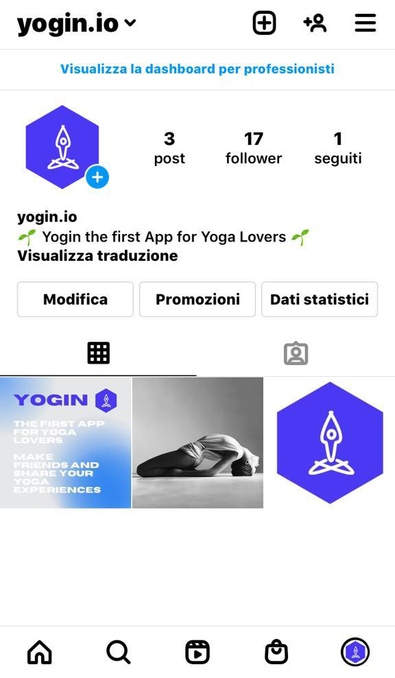
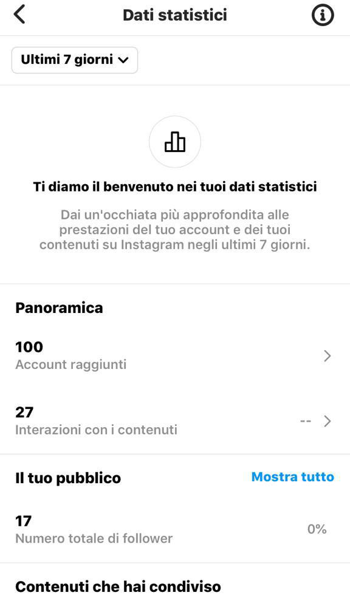
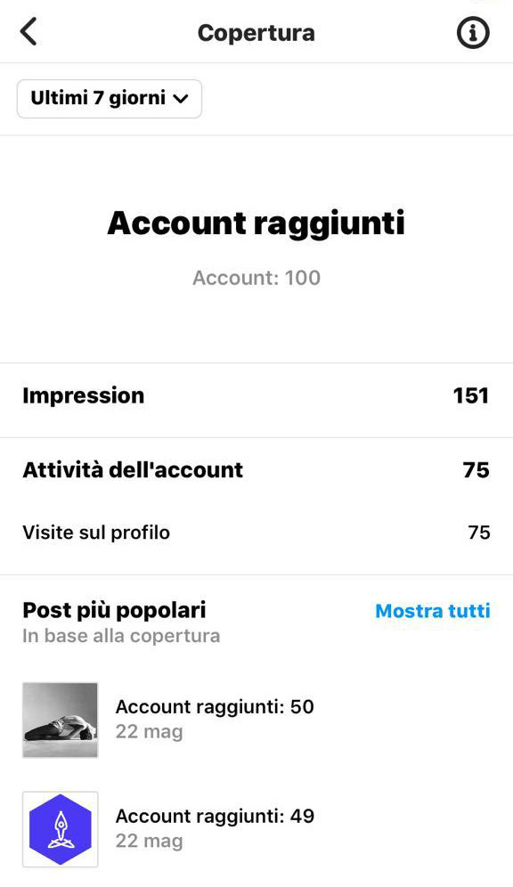
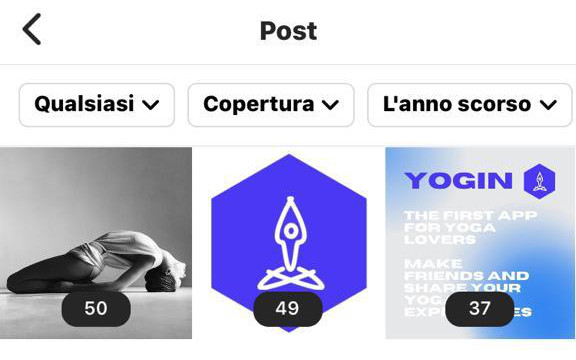

Comunication Strategy
Background
Yogin a differenza dei competitors sceglie di offrire agli appassionati di yoga uno spazio virtuale in cui possono condividere i propri contenuti insieme alla comunità yoga ed entrare in relazione con questa.
L’utente di Yogin avrà la possibilità di identificarsi con un proprio gruppo di appartenenza.
Obiettivi Comunicativi
L’obiettivo della pagina di presentazione dell’app è di far conoscere agli appassionati di yoga l’esistenza di uno spazio virtuale dedicato a loro e di spingere l’utente, che visita la pagina, di creare un proprio account per entrare a far parte della Community Yogin
Target audience e messaggio
Yogin ha come target primario tutte le persone e le organizzazioni che gravitano intorno al mondo dello yoga, sia semplici appassionati sia i professionisti del settore. La provenienza del target di Yogin non è specifica ma si rivolge agli appassionati di yoga di tutto il mondo con un’età compresa fra i 20 e i 60 anni.
Normalmente chi pratica lo yoga si trova in un ambito di nicchia in cui le informazioni passano attraverso il passaparola e attraverso il lavoro di diffusione della pratica svolti dalle scuole attraverso i social media, materiale cartaceo dato che si rivolgono a un mercato locale ristretto.
Credo che il modo migliore per raggiungere il target primario sia attraverso la promozione web per quanto riguarda i praticanti hobbysti; mentre per il mondo dei professionisti l’idea sarebbe di una promozione mirata attraverso contatti mail personalizzati.La barriera nella diffusione del messaggio è che gli utenti sono tanti e dispersi. Inoltre esistono già social network più generalisti che raccolgono interessi differenti e specifici come questi.
La barriera nella diffusione del messaggio è che gli utenti sono tanti e dispersi. Inoltre esistono già social network più generalisti che raccolgono interessi differenti e specifici come questi.
Il messaggio che Yogin vuole trasmettere è la possibilità di essere parte di una comunità che condivide la stessa passione.
Il target primario si trova a disposizione un mezzo attraverso il quale viene a conoscenza di tutte le proposte e contenuti degli altri utenti in un unico spazio virtuale.
L’obiettivo della pagina di Yogin è far conoscere agli appassionati di yoga l’esistenza dell’applicazione.
Promozione
Ho deciso di promuovere il sito di Yogin attraverso Instagram creando la pagina dell’applicazione.
Inoltre per promuovere il sito web e la pagina Instagram ho utilizzato la messaggistica su Whatsapp con persone potenzialmente interessate al tema.

Valutazione dei risultati
L’obiettivo comunicativo è stato in parte raggiunto perché la realizzazione della pagina Instagram, coordinata con la creazione del sito e veicolata anche attraverso l’utilizzo di messaggistica mirata a contatti personali con Whatsapp, mi ha permesso di far conoscere ad un primo gruppo di potenziali utenti la nuova app dedicata agli appassionati di yoga.
La pagina Instagram e i post creati hanno ottenuto un buon riscontro:


